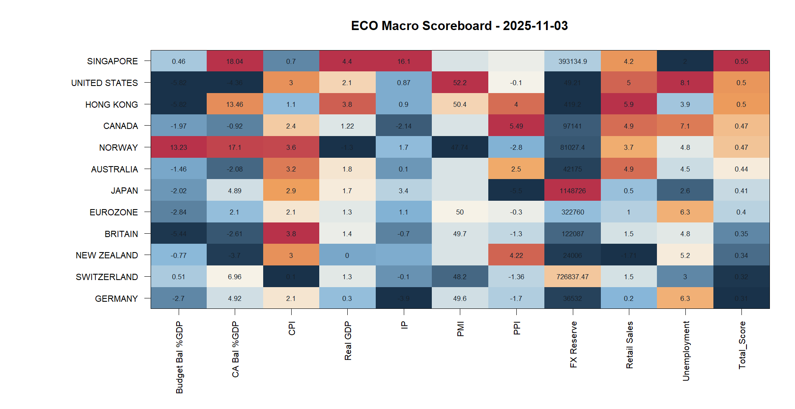
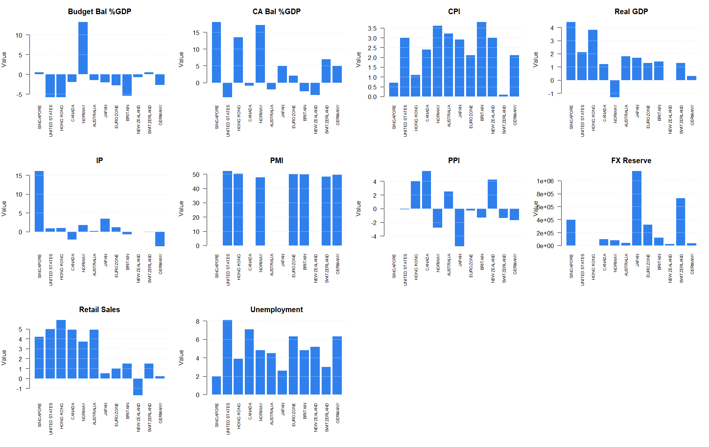
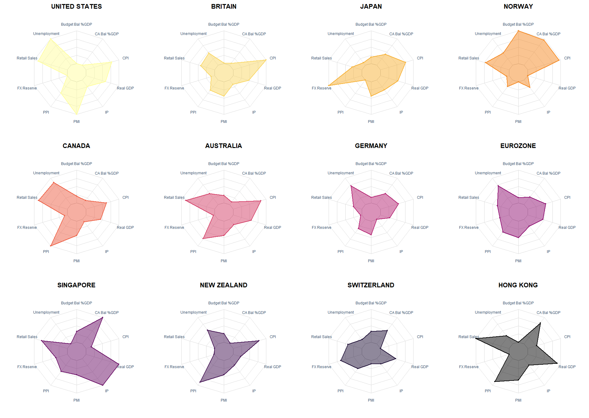

| Country | Budget Bal %GDP | CA Bal %GDP | CPI | Real GDP | IP | PMI | PPI | FX Reserve | Retail Sales | Unemployment | Total_Score |
|---|---|---|---|---|---|---|---|---|---|---|---|
| SINGAPORE | 0.46 | 18.04 | 0.7 | 4.400 | 16.10 | NA | NA | 393134.90 | 4.200 | 2.0 | 0.5523169 |
| UNITED STATES | -5.82 | -4.36 | 3.0 | 2.100 | 0.87 | 52.20 | -0.10 | 49.21 | 5.000 | 8.1 | 0.4991819 |
| HONG KONG | -5.82 | 13.46 | 1.1 | 3.800 | 0.90 | 50.40 | 4.00 | 419.20 | 5.900 | 3.9 | 0.4973175 |
| CANADA | -1.97 | -0.92 | 2.4 | 1.215 | -2.14 | NA | 5.49 | 97141.00 | 4.900 | 7.1 | 0.4735115 |
| NORWAY | 13.23 | 17.10 | 3.6 | -1.300 | 1.70 | 47.74 | -2.80 | 81027.40 | 3.700 | 4.8 | 0.4669966 |
| AUSTRALIA | -1.46 | -2.08 | 3.2 | 1.800 | 0.10 | NA | 2.50 | 42175.00 | 4.900 | 4.5 | 0.4394802 |
| JAPAN | -2.02 | 4.89 | 2.9 | 1.700 | 3.40 | NA | -5.50 | 1148726.00 | 0.500 | 2.6 | 0.4088444 |
| EUROZONE | -2.84 | 2.10 | 2.1 | 1.300 | 1.10 | 50.00 | -0.30 | 322760.00 | 1.000 | 6.3 | 0.4013104 |
| BRITAIN | -5.44 | -2.61 | 3.8 | 1.400 | -0.70 | 49.70 | -1.30 | 122087.00 | 1.500 | 4.8 | 0.3540228 |
| NEW ZEALAND | -0.77 | -3.70 | 3.0 | 0.000 | NA | NA | 4.22 | 24006.00 | -1.707 | 5.2 | 0.3414259 |
| SWITZERLAND | 0.51 | 6.96 | 0.1 | 1.300 | -0.10 | 48.20 | -1.36 | 726837.47 | 1.500 | 3.0 | 0.3181864 |
| GERMANY | -2.70 | 4.92 | 2.1 | 0.300 | -3.90 | 49.60 | -1.70 | 36532.00 | 0.200 | 6.3 | 0.3149486 |